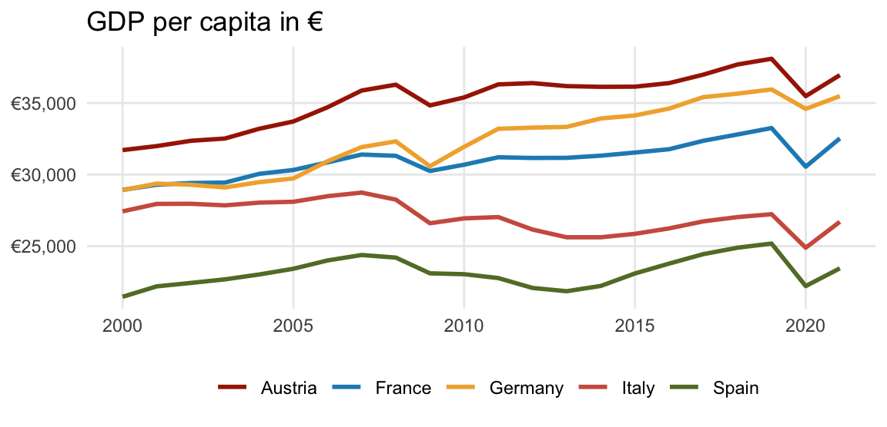
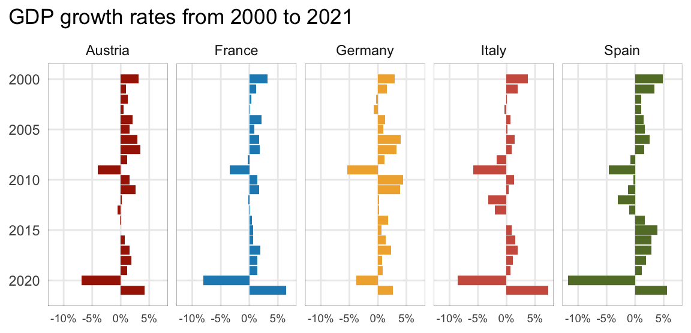
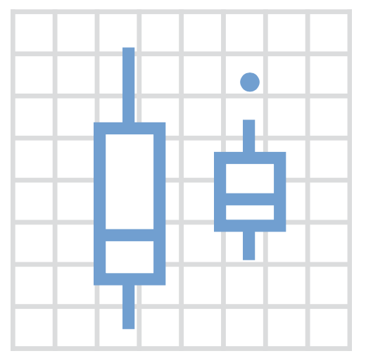
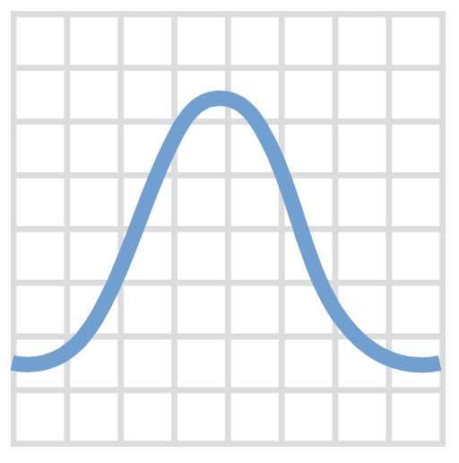
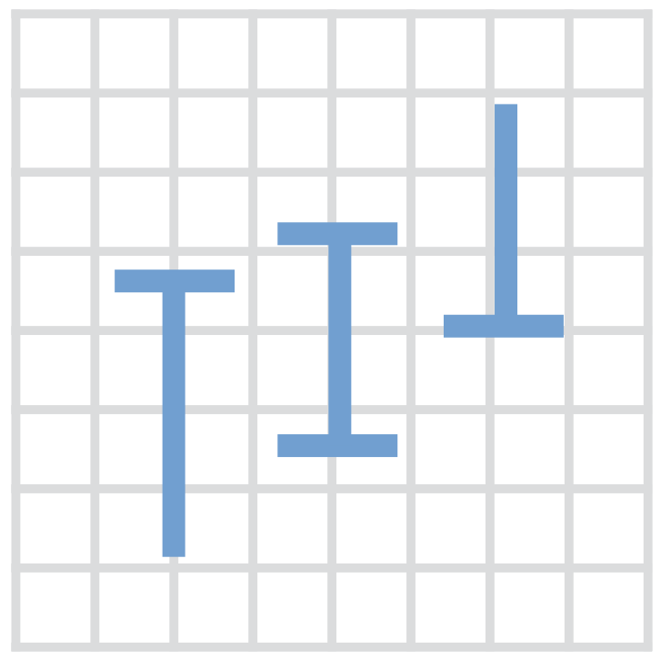
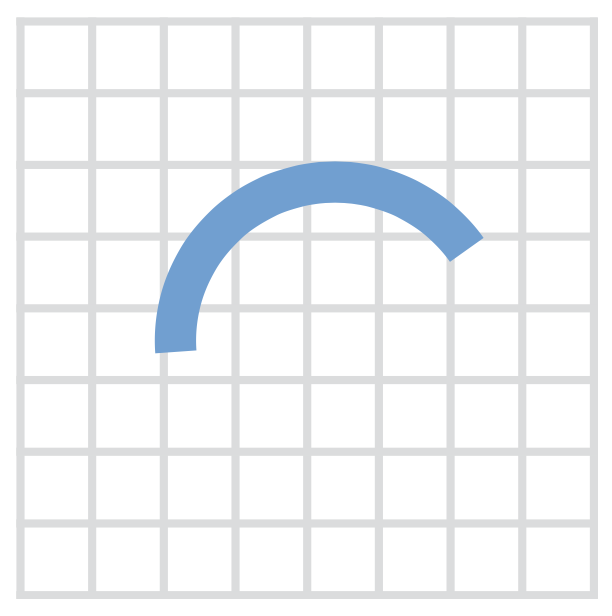
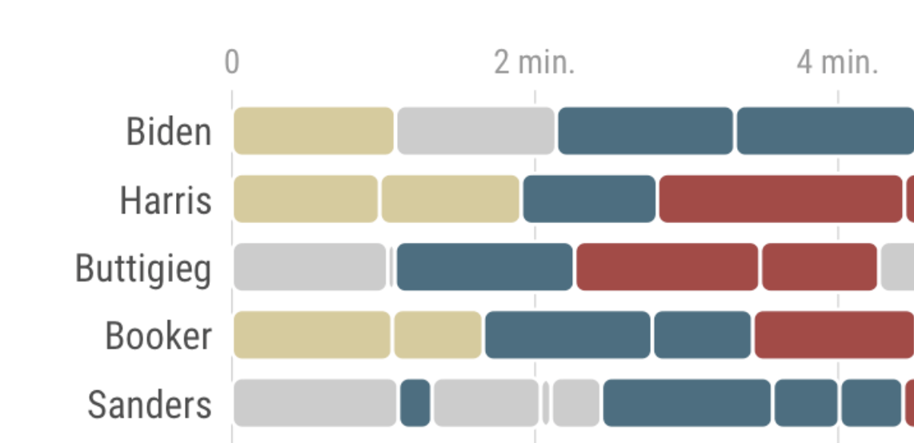
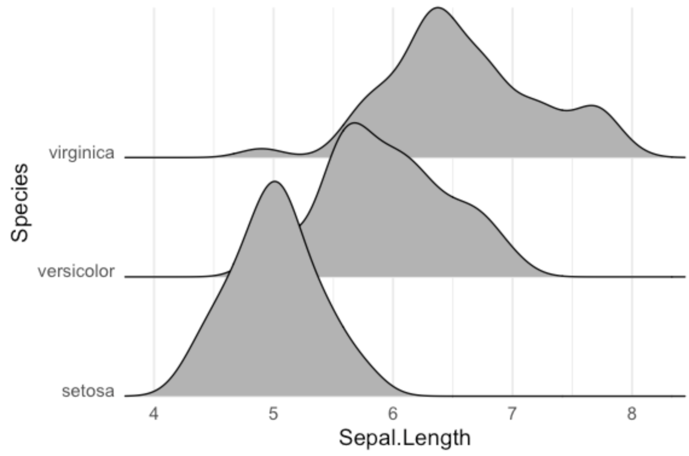

Economic Policy Visualization
Growth · Geometries
Growth in economic policy
In recent years economic growth has come to occupy an exalted position in the hierarchy of goals of government policy […] At least in professional economic discussion, we need to give a definite and distinctive meaning to growth as a policy objective. Let it be neither a new synonym for good things in general nor a fashionable way to describe other economic objectives. Let growth be something it is possible to oppose as well as to favor, depending on judgments of social priorities and opportunities.
James Tobin (1964)
Beyond GDP initiatives
- Even though many aspects of the living standard correlate with GDP, there are also some blind spots (informal sector and non-market production, environmental and health externalities, etc.).
- GDP is not designed as comprehensive measure of prosperity and well-being. “Beyond GDP” initiatives aim to find additional indicators for environmental and social aspects of progress.
- In 2007, the EU commission organized a conference on “Beyond GDP” which led to a roadmap for the “EU 2020 Strategy”.
- Much attention for Stiglitz-Sen-Fitoussi Report in 2009 with 12 recommendations how to measure progress.
- United Nations formally adopted 17 “Sustainable Development Goals” (or Agenda 2030) in their general assembly in 2015.
The growth imperative

- Growth is an important goal in economic policy
- Magic square of economic policy promotes high GDP growth (besides low inflation, high emplpoyment, and balanced trade)
- UN Sustainable Development Goals (SDG): “Promote inclusive and sustainable economic growth, employment and decent work for all”
- More specifically, “sustain per capita economic growth in accordance with national circumstances and, in particular, at least 7 per cent gross domestic product growth per annum in the least developed countries”
Rule of 70
We often underestimate the power of growth! How long does it take for a variable to double with a specific growth rate? The rule of 70 is a good approximation. Just divide 70 by the annual growth rate:
\[ \Delta = \frac{70}{g} \]
Even with a moderate growth rate of 2%, total GDP doubles in 35 years. An annual growth rate of 7% would mean a doubling of production in only 10 years.
Measuring GDP
- 1937: Simon Kuznets presented the modern concept of GDP to US Congress following the Great Depression, warning that it is not a measure of national welfare.
- 1953: System of National Accounts (SNA) aims to harmonize measurement of GDP across the globe.
- 1995: European System of Accounts (ESA) is used by member states of the European Union (latest adaption 2010)
- Three calculations: output, expenditure, and income approaches
- GDP is not entirely exact: some components have to be estimated (e.g. tip, underground economy)
- GDP has methodological gaps and some arbitrary definitions of what is productive, e.g. it includes childcare by nannies but not by parents.
Short read: Economist: Why GDP is so difficult to measure?
GDP growth across the globe
── Attaching core tidyverse packages ──────────────────────── tidyverse 2.0.0 ──
✔ dplyr 1.1.2 ✔ readr 2.1.4
✔ forcats 1.0.0 ✔ stringr 1.5.0
✔ ggplot2 3.4.3 ✔ tibble 3.2.1
✔ lubridate 1.9.2 ✔ tidyr 1.3.0
✔ purrr 1.0.2
── Conflicts ────────────────────────────────────────── tidyverse_conflicts() ──
✖ dplyr::filter() masks stats::filter()
✖ dplyr::lag() masks stats::lag()
ℹ Use the conflicted package (<http://conflicted.r-lib.org/>) to force all conflicts to become errorsWarning: Using `size` aesthetic for lines was deprecated in ggplot2 3.4.0.
ℹ Please use `linewidth` instead.Linear scale (1989 = 1)
Logarithmic scale (1989 = 1)
Source: World Bank
Reeeally long-term growth of GDP
Linear scale
Logarithmic scale

Source: Our world in data
Why do some economies grow and others don’t?
Related reading: Cuaresma et al. (2020)
Reasons for differences in economic growth
Economists historically focus on the “factors of production”, like physical capital and human capital to explain differences in growth (Mankiw et al., 1992; Young, 1995).
The contemporary literature (Acemoglu et al., 2019; Glaeser et al., 2004) additionally highlights
- culture (e.g., the willingness to trust and engage in trade with strangers)
- geography (e.g., ease of transportation, resources)
- institutions (e.g., welfare state regimes, democracy, legal rights)
- (luck)
Short read: Asterisk Magazine
Which chart describes best what you want to show?
Attache Paket: 'scales'Das folgende Objekt ist maskiert 'package:purrr':
discardDas folgende Objekt ist maskiert 'package:readr':
col_factor

Warning: The `size` argument of `element_rect()` is deprecated as of ggplot2 3.4.0.
ℹ Please use the `linewidth` argument instead.
Show me your geometries!
Selected geometries in {ggplot}
| Geometry | Explanation | |
|---|---|---|
| area, ribbon | An area plot is the continuous analogue of a stacked bar chart. | |
| bar, col | Bar charts may be proportional (bar) or with absolute values (col). | |
|  | boxplot | The boxplot compactly displays the distribution of a continuous variable. |
|  | density, histogram | Kernel density plot, which is a smoothed version of the histogram. |
| hline, vline, abline | Draws a horizontal or vertical line with an intercept or a line with a slope. | |
| line, path | Line between observations in order of variable (line) or appearance (path) | |
|  | linerange, errorbar | Various ways of representing a vertical interval defined by x, ymin and ymax. |
| point, jitter | The point geom is used to create scatterplots and jitter avoids overplotting. | |
|  | segment, curve | Draws a straight or curved line between points (x,y) and (xend, yend). |
| smooth | Smoothed line with standard error bounds across a scatterplot. | |
| violin | A violin plot is a compact display of a continuous distribution. |
Additional geometries
ggstream::geom_stream() 
waffle::geom_waffle() 
ggchicklet::geom_chicklet() 
ggridges::geom_density_ridges() 
ggsankey::geom_sankey() 
ggbump::geom_bump() 
Bibliography
References
Acemoglu, Daron/Naidu, Suresh/Restrepo, Pascual/Robinson, James A. (2019). Democracy does cause growth. Journal of Political Economy, 127(1), 47–100. DOI: 10.1086/700936
Cuaresma, Jesús Crespo/Danylo, Olha/Fritz, Steffen/Hofer, Martin/Kharas, Homi/Bayas, Juan Carlos Laso (2020). What do we know about poverty in north korea? Palgrave Communications, 6(40). DOI: 10.1057/s41599-020-0417-4
Glaeser, Edward L./Porta, Rafael La/Lopez-de-Silanes, Florencio/Shleifer, Andrei (2004). Do institutions cause growth? Journal of Economic Growth, 9(3), 271–303. DOI: 10.1023/b:joeg.0000038933.16398.ed
Mankiw, N. G./Romer, D./Weil, D. N. (1992). A contribution to the empirics of economic growth. The Quarterly Journal of Economics, 107(2), 407–437. DOI: 10.2307/2118477
Tobin, James (1964). Economic growth as an objective of government policy. American Economic Review, 54(3), 1–20.
Young, A. (1995). The tyranny of numbers: Confronting the statistical realities of the east asian growth experience. The Quarterly Journal of Economics, 110(3), 641–680. DOI: 10.2307/2946695